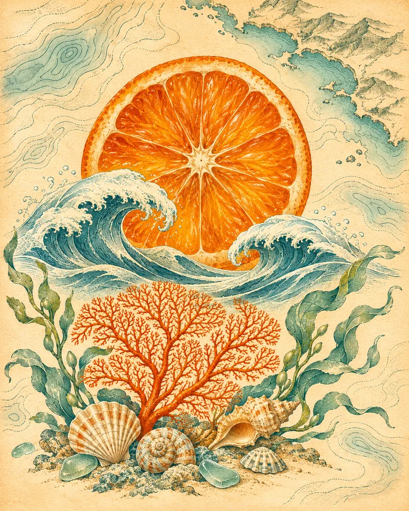
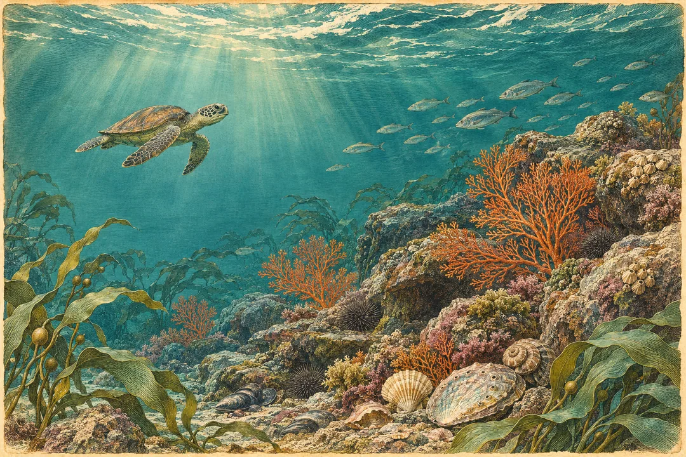
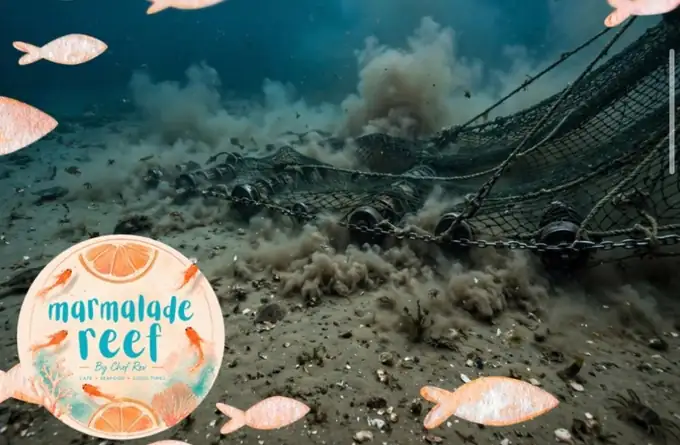
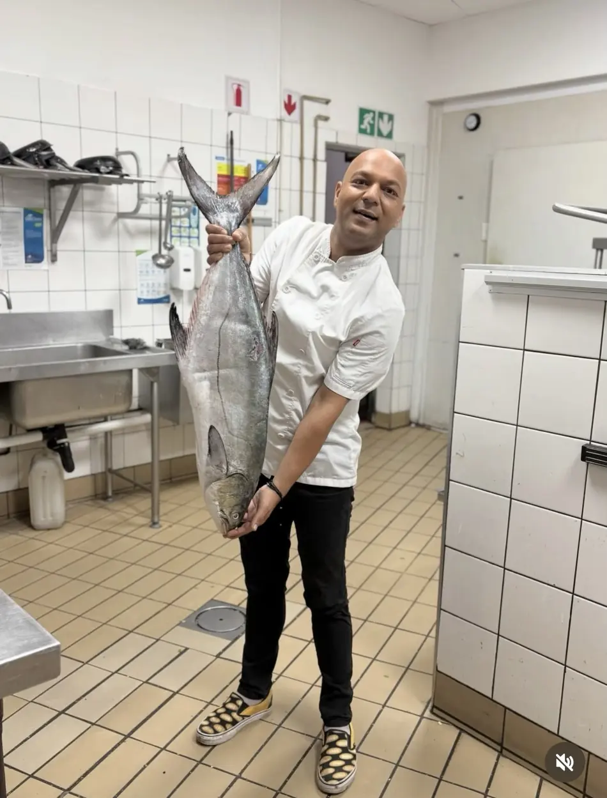

Seafood & soul
An ocean-inspired food offering. Menu details and pricing pending approval.
Welcome to the world of Marmalade Reef by Chef Rev — a joyful, ocean-inspired seafood café where good food, good people and a love for our blue planet come together.
Marmalade Reef was imagined as a place where the spirit of the ocean meets generous hospitality. A space to share food, start conversations and celebrate the beauty of the sea that surrounds us.
At its heart is Chef Rev's passion for good food, sustainable seafood and a community that cares about the coastline.

Inspired by Chef Rev's public announcement, the vision reaches beyond the plate — towards a future where enjoying the ocean and caring for it can go hand in hand.
Encouraging more conversations about sustainable seafood choices.
A vision for beach cleanups and reducing unnecessary plastic pollution.
Celebrating our coast through education, art and community involvement.

A place where good food, good people and a genuine love for the ocean come together.— The Marmalade Reef vision
Discover why a childhood lesson about the seventy-four fish stayed with Chef Rev, what bottom trawling means for the seabed, and how the Māori practice of rāhui can help communities protect marine resources.
Explore the colours of the Marmalade ocean, the stories behind Chef Rev’s conservation vision, and the simple idea: know your catch and love the ocean.
Read Reef Stories

Chef Rev brings a love of hospitality, food and the ocean to Marmalade Reef. The café is his way of creating something that feels meaningful — not just a meal, but a gathering place with heart.
The goal is simple: to bring people together over good food while encouraging greater care for the natural world around us.
Follow Chef Rev Hospitality on InstagramMarmalade Mist Food Services has announced that it is moving into its new home at Marmalade Reef by Chef Rev, bringing another chapter of hospitality to Umhlanga Rocks.
Marmalade Reef brings its seafood-inspired café experience, while Marmalade Mist continues its own food and event experiences. Together, they share a home and a love for bringing people together around food.
Information based on Marmalade Mist's public Instagram announcement. Please contact the respective business directly to confirm services, availability and arrangements.
Continuing the food experiences Marmalade Mist is known for, now from its new home at the reef.
Set against the energy of Umhlanga, Marmalade Reef was announced as a welcoming space for seafood, conversations and ocean lovers.
Please confirm current operating hours, menu and availability with the business before visiting. This is a website concept awaiting final owner details.
189 Ridge Road, Umhlanga Rocks
Umhlanga Centre, next to Harry James
KwaZulu-Natal, South Africa
Street address from Marmalade Mist’s announcement; the exact unit and visiting arrangements should be confirmed with the business.
Business enquiries: 066 289 1087
Official Instagram: @marmaladereef
Marmalade Reef’s November 2026 posts described the café as opening soon; current opening details should be checked before visiting.